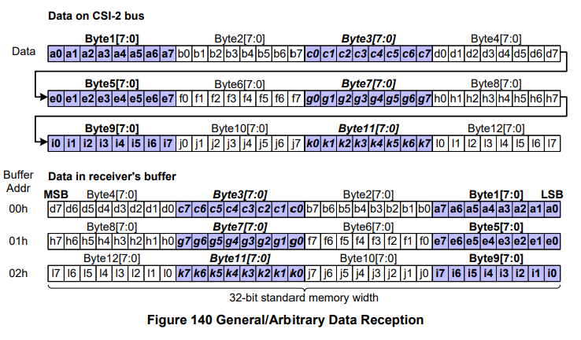

MIPI-CSI-4
本文最后更新于：2024年5月4日 下午
- 本篇博客将重点介绍 YUV/RGB/RAW 三种图像格式在CSI-2协议中的数据传输格式。
1. YUV 图像数据
1.1 关于YUV
YUV将亮度与色度进行分离。
- Y 表示亮度，即灰度值。另外，其还包含了较多的绿色通道信息。
- U 表示蓝色通道与亮度的差值。
- V 表示红色通道与亮度的差值。
YUV 优点
- 研究发现，人眼对亮度的敏感程度超过了色度。
- 因此YUV将亮度与色度信息分离，并使用不同bit进行存储，这样可以更高效的存储图像数据。
- 研究发现，人眼对亮度的敏感程度超过了色度。
YUV 采样方式
色度通道的采样率可以低于亮度通道，且不会明显降低图像质量。因此存在以下4种 YUV 采样方式。
4:4:4：表示完全采样，每个像素都有独立的Y/U/V值。
4:2:2：相邻每两个像素点共用一个U/V值。
4:2:0：相邻每四个像素点共用一个U/V值。
4:1:1：与YUV420采样类似，都是四个像素点共用一个U/V值，但YUV411是水平方向的四个像素点。如下图。
1.2 Legacy YUV420 8-bit
Legacy YUV420数据格式主要是为了和已经存在的系统做兼容。非Legacy 的YUV420数据格式能够减少实现开销。
Legacy YUV420 8-bit 数据传输如下图格式，在奇数行发送UYYUYY...，在偶数行发送VYYVYY...。
传输数据若按照CSI-2协议进行传输，则传输结果如下图所示。
其帧格式如下图所示。
1.3 YUV420 8-bit
YUV420 8-bit 传输数据格式如下图所示。其在奇数行只进行YYY...传输，在偶数行进行UYVYUYVY...序列传输。
- 因此，在偶数行传输的数据大小是奇数行传输数据大小的两倍。
- 这篇博客3.1节中介绍到，同一帧中，相同Data Type的行都应该是相同长度，但YUV420 是一个例外。
传输数据若按照CSI-2协议进行传输，则传输结果如下图所示。
其帧格式如下图所示。
1.4 YUV420 10-bit
其传输数据格式如下图所示。
奇数行仍然只传输Y数据，不同的是，在传输四个字节之后，将每个Y数据LSB 2bit组合，生成新的传输字节。
偶数行传输UYVY，并将对应的LSB 2bit 数据组合，生成新的传输字节。
传输数据若按照CSI-2协议进行传输，则传输结果如下图所示，LSB优先传输。
其帧格式如下图所示。
1.5 YUV422 8-bit
YUV 422 是相邻的两个像素点共用一组U/V值。
YUV422 8-bit 数据传输如下图所示，其发送数据序列为UYVY。
其帧格式如下图所示。
1.6 YUV422 10-bit
其数据传输格式如下图所示，LSB优先传输。
其帧格式如下图所示。
2. RGB 图像数据
2.1 RGB888
其数据传输格式如下图所示，以BGR的字节序列进行传输。
其帧格式如下图所示。
2.2 RGB666
其传输数据格式如下图所示，将R，得到BGR[17:0]进行传输。
在CSI串行传输时，LSB优先发送。
其帧格式如下图所示。
2.3 RGB565
与2.2节相同，将R，得到BGR[15:0]进行传输。
2.4 RGB555
在CSI-2总线上传输RGB555数据时，需要做特殊处理，如下图所示。
其在绿色通道中填充1bit 数据0，来实现与RGB565相同的处理方式。
2.5 RGB444
通用，在CSI-2总线上传输时，需要进行填充，如下图所示。
在红色和蓝色通道填充数据‘1’，在绿色通道填充数据‘1,0’，从而实现与RGB565相同的处理方式。
3. RAW 图像数据
3.1 关于RAW
- RAW 文件并不包含影像数据，而是包含进入相机并被感光器接收的光线强弱数据。
- RAW 文件是 相机拍摄后原始数据格式的统称。
- RAW 6/7/8/10/12/14/16/20/24被用来传输图像传感器RAW图像数据，但RAW数据类型不仅限于这几种。
3.2 RAW 6/7/8
在CSI-2总线上传输格式均为直接拼接传输，仍以字节为单位，LSB优先。具体可参考协议P128。
下图为RAW 7 在CSI-2协议中传输格式。
3.3 RAW 10
将数据进行拆分得到两部分：RAW[9:2]，RAW[1:0]；并将LSB 2bit进行拼接，得到一个新的Byte。如下图所示。
其帧格式如下图所示。
3.4 RAW 12
3.5 RAW 14

3.6 RAW 16
传输格式如下图所示。
注意，LSB优先是指在字节中传输时，是LSB优先，与字节顺序无关。
3.7 RAW 20
4. 用户自定义类型数据
对于用户自定义类型数据，满足以下几点：
包的大小可以随意变化。
包与包之间的间隔区间可以随意变化。
5. 建议的内存存储格式
通用数据接收如下图所示。
以RX端 Buffer中每个单元位宽为 32bit 为例。
RX端接收的第一个字节数据被放置在Buffer的LSB中，以此类推，第四个字节数据被放置在Buffer的MSB中。

对于前面介绍的三种数据格式，与通用数据接收格式类似，具体可参考协议中P142。